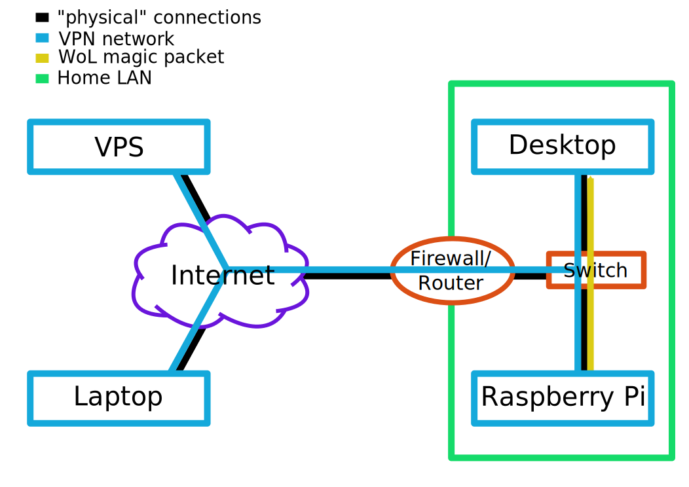

VPN with tinc
I finally solved the problem that I could not access my home computer, when I am not at home. In many cases the easiest solution is to forward a port on the home router and run a SSH daemon on the home computer. However, it is not possible for me to forward ports to the public internet. I got around this issue by setting up a Virtual Private Network (VPN) using the tinc VPN daemon. tinc is one of many VPN solutions available on GNU/Linux. It is simple and easy to set up, especially when comparing it to OpenVPN, which has an enormous amount of features and configuration options.
The setup
My VPN network consists of four different computers, which are all running Arch Linux: a Virtual Private Server (VPS) that has a static IP address and is accessible from the public Internet, a laptop, the home computer (Desktop) and in the same LAN a Raspberry Pi. I use the Raspberry Pi to wake up the home computer via Wake on LAN (WoL). This allows me to shutdown the home computer when I leave my home and to start it only when I actually need it. On initial connection, the Laptop, Desktop and Raspberry connect to the VPS. But due to tinc’s automatic full mesh routing feature the traffic is later sent directly to the destination computer, which usually leads to better and faster connections between the computers in the VPN.

Configuring tinc
The following steps will quide you through the configuration process for setting up a tinc VPN called thevpn that uses the 10.42.42.0/24 subnet. If you want to choose a different name, replace all occurrences of thevpn with the name you like. Also replace the angle brackets and the text within them with the values shown in the following table.
| host | hostname | ip |
|---|---|---|
| VPS | vps | 10.42.42.1 |
| Laptop | laptop | 10.42.42.2 |
| Desktop | desktop | 10.42.42.3 |
| Raspberry Pi | raspberry | 10.42.42.4 |
Per host configuration
Install the tinc daemon
pacman -S tincCreate the configuration directory structure
mkdir -p /etc/tinc/thevpn/hostsEdit /etc/tinc/thevpn/tinc.conf. On VPS the config looks like this:
Name = vps
Device = /dev/net/tunon all other three computers the config looks like this:
Name = <hostname>
Device = /dev/net/tun
ConnectTo = vpsEdit the start script /etc/tinc/thevpn/tinc-up
#!/bin/sh
ip link set $INTERFACE up
ip addr add <ip>/32 dev $INTERFACE
ip route add 10.42.42.0/24 dev $INTERFACEEdit the stop script /etc/tinc/thevpn/tinc-down
#!/bin/sh
ip route del 10.42.42.0/24 dev $INTERFACE
ip addr del <ip>/32 dev $INTERFACE
ip link set $INTERFACE downMake the scripts executable
chmod +x /etc/tinc/thevpn/tinc-up
chmod +x /etc/tinc/thevpn/tinc-downCreate the host file /etc/tinc/thevpn/hosts/<hostname>. On VPS the config looks like this:
Address = <static ip of vps>
Port = 655
Subnet = 10.42.42.1/32on all other three computers the config looks like this:
Port = 655
Subnet = <ip>/32Create a keypair (keep the default values, when this command asks you where to save the keys)
tincd -n thevpn -K 4096Repeat all these steps on all four machines.
Synchronize host files and start tincd
Before starting the tinc daemon, the host configuration files have to be synchronized across all four computers. The
/etc/tinc/thevpn/hosts directory on every host should contain four host configuration files, that are identical across
the four hosts. After the host configuration files are copied to all machines, the tinc daemon can be started, first on
VPS and then on all other computers in the VPN Network. The tinc daemon can be enabled and started via systemd:
systemctl enable tinc@thevpn.service
systemctl start tinc@thevpn.serviceI recommend, you first start the tinc daemon manually before starting it via systemd to ensure that everything is set up correctly. The troubleshooting section describes how to start tinc manually.
Troubleshooting
A few hints that might help fixing issues you encounter:
- Use
tincd -n thevpn -d3 -Dto start tinc manually with debugging output and look up the errors here. Note that by pressing Ctrl+C the debug level is increased to 5, i.e. you cannot kill tincd by pressing Ctrl+C. Use Ctrl+Z andkill %1instead. - Check that the correct IP addresses and subnet masks are used, especially the
/32masks - Chapter 5 of the tinc manual
Wake On Lan
Picture following scenario: You are travelling and working on your laptop. You want to access files on your home
desktop, but it is shut down. Luckily, the Raspberry Pi is running. You can establish a ssh connection to the Raspberry
and start the desktop computer from the Raspberry via WoL. You can use the following script to remotely start and stop
the desktop computer. The shell script takes one argument (start or stop).
#!/bin/sh
if [ "$1" == "start" ]; then
ssh 10.42.42.4 "wol -h desktop <desktop_mac_address>"
elif [ "$1" == "stop" ]; then
ssh 10.42.42.3 -t "sudo /usr/bin/systemctl poweroff"
fi